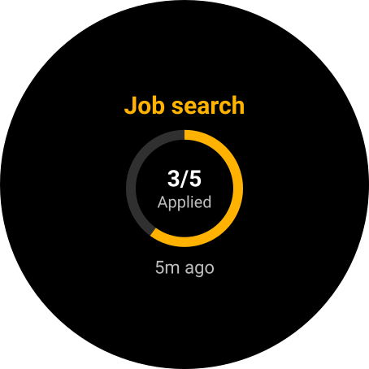
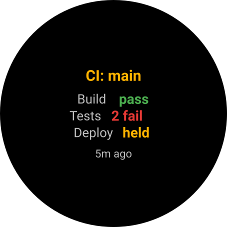
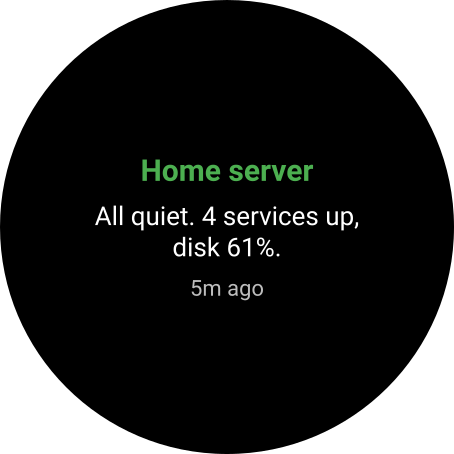

CI status
Build, tests and deploy as three colored rows. A GitHub Action republishes the feed after each run.
examples/ci-status.jsonWristFeed is an open-source Wear OS app, a tiny JSON format and a Python CLI. Publish a small JSON file anywhere. Your Galaxy or Pixel watch shows it as a tile and a watch-face complication.



Rendered by wristfeed preview from the example feeds. No watch needed.
STATUS v0.1
The feed format and the Python publisher work and are tested. The Wear OS app is written but has not yet been compiled or run on a device.
How it works
A script, CI job or server writes a small JSON file. wristfeed build does it for you.
Any HTTPS URL works: a secret gist, GitHub Pages, any static host. No server of your own.
Paste the URL into WristFeed and add the tile. The watch fetches it with a plain GET every 30 minutes.
{
"wristfeed": 1,
"title": "JARVIS",
"status": "warn",
"rows": [{"label": "Apps", "value": "1/5", "status": "bad"}],
"updated": "2026-11-16T06:40:00Z"
}That is a complete, valid feed. Only wristfeed, title and updated are required.
There is no phone app to pair. The tile always shows the data's real age, and old data is dimmed, never passed off as fresh.
Use cases
Build, tests and deploy as three colored rows. A GitHub Action republishes the feed after each run.
examples/ci-status.jsonApplications against a weekly goal, as a ring. The same value drives a ranged complication on your watch face.
examples/job-search.jsonOne line when all is quiet: services up, disk use. A short stale window shows when the server stops reporting.
examples/server-health.jsonHabits, goals, a home project. Keep one tile per feed. Never put secrets in a feed: a secret gist is unlisted, not private.
examples/github-action-publish.ymlFeed format
Unknown fields are ignored. Bad optional fields fall back to defaults. Full rules in SPEC.md.
| Field | Type | Meaning |
|---|---|---|
wristfeed | integer, required | Format version. Must be 1. |
title | string, required | Top of the tile, up to 24 characters shown. |
updated | RFC 3339, required | When the data was made. Drives the age footer. |
status | ok|warn|bad|idle | Accent color. Default idle. |
kind | stats|progress|message | Which layout. Default stats. |
rows | array | Up to 3 {label, value, status?} rows. |
progress | object | {label, value, max}. A ring, and the ranged complication. |
message | string or null | One short line, up to 60 characters shown. |
stale_after_minutes | integer | When the tile shows "Old data". Default 360. |
tap_url | https URL or null | Opened on the phone when you tap the tile. |
Quickstart
Python 3.10+, no runtime dependencies. publish uses the GitHub CLI and never creates a gist unless you pass --create.
# install
pip install ./publisher
# build a feed (updated = now, UTC)
wristfeed build --title "Deploys" --status ok \
--row "Prod=green:ok" --row "Queue=3" \
--stale-after 120 --out feed.json
# check it: exit 0 if valid, else each problem is printed
wristfeed validate feed.json
# render the tile as a round 454 px SVG
wristfeed preview feed.json --out tile.svg
# publish: create a secret gist once, then update it
wristfeed publish feed.json --create
wristfeed publish feed.json --gist GIST_IDThen paste the printed raw URL into WristFeed on the watch. More in the publisher README.
Credits & prior art
Each of these projects does its own job well. WristFeed generalizes what they proved.